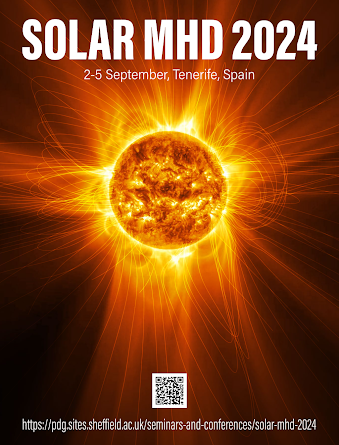
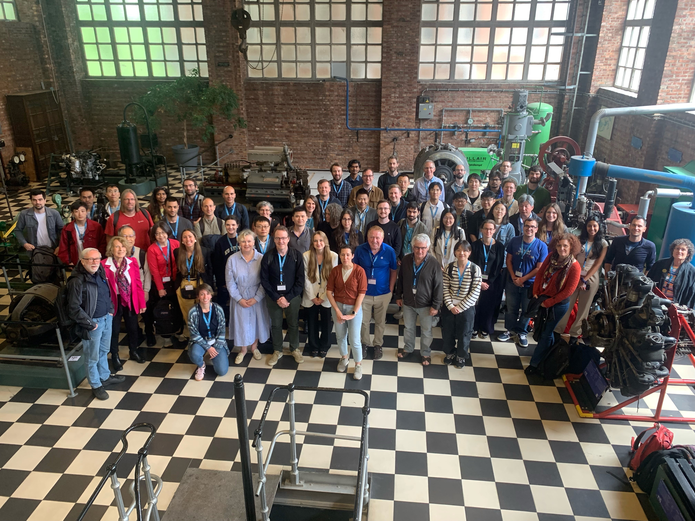
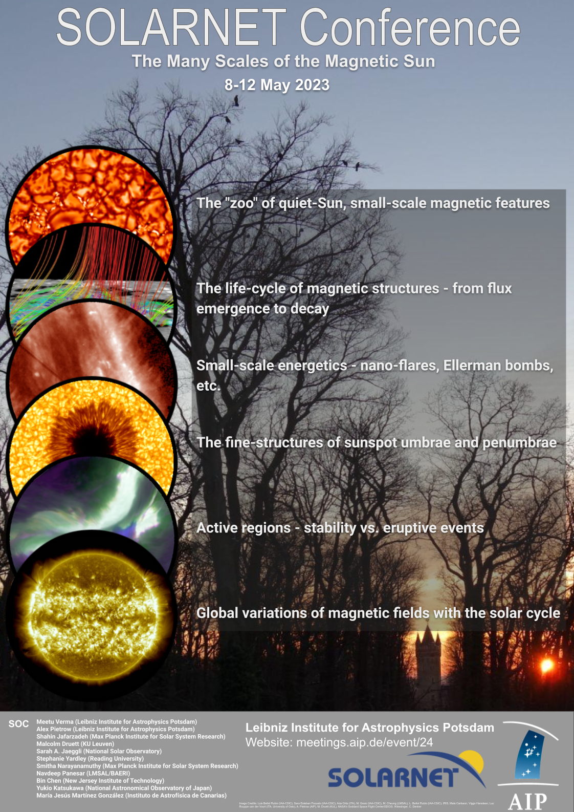
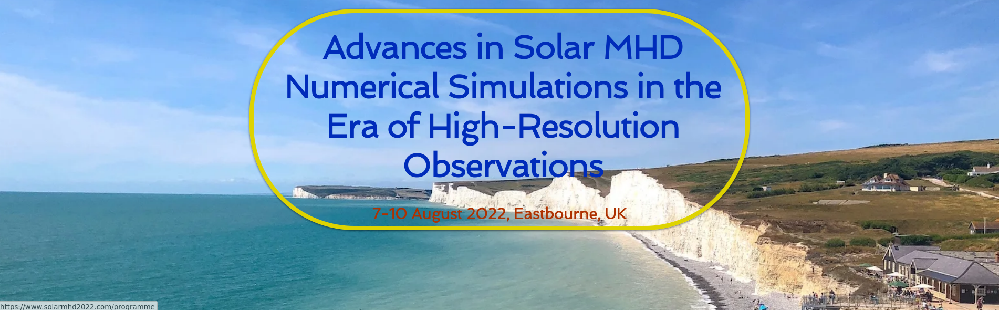

Chaired Conferences, meetings, and sessions
- Status: Submissions Open until 2025.02.18
- Meeting: The eight geoscience disciplines of the society—Atmospheric (AS), Biogeoscience (BG), Hydrological (HS) Interdisciplinary (IG), Ocean (OS), Planetary (PS), Solar & Terrestrial (ST), and Solid Earth (SE) —are the focus of the annual meeting, which is open to scientists, researchers, and practitioners in these fields.
- Session title: ST17: Advances In Our Understanding of Plasma Flows and Waves in the Solar Atmosphere From Single, Multi-fluid, and Kinetic Model Perspectives
- Chairs: Dr Malcolm Druett (University of Sheffield, UK), Prof. Viktor Fedun (University of Sheffield, UK), Prof. Abhishekh Kumar Srivastava (Department of Physics, IIT (BHU), India), Dr Dr. Wenzhi Ruan (MPS, Germany), Dr Sergiy Shelyag (Flinders University, Australia)
- Venue: Marina Bay Sands Expo and Convention Centre, Singapore
- Abstract: Modern high spatial and temporal resolution numerical and observational studies of dynamical solar processes e.g. flares, CMEs, vortices, and jets provide us with unprecedented possibilities to understand various plasma-waves and flow-related physical processes in the solar atmosphere and beyond. The development of theoretical models of the solar environment is essential to represent the complex interactions between magnetic fields, plasma flows and waves. In quiet-Sun and active regions, this interplay can result in turbulence generation, solar flares, vortex motion formation, plasma jet propulsion, and the beginning of instabilities. The combination of data from modern space and ground-based solar instruments, e.g., Parker Solar Probe, Solar Orbiter, Aditya-L1, IRIS, CHASE, COSMO, DKIST, DST, BBSO and SST with the simulation capabilities of codes such as ARMS, Bifrost, CO5BOLD, MURaM, MPI-AMRVAC, SAC, Ramen, and R2D2 empower us to interpret, theorise, forecast behaviours, as well as provide requirements for the design of future instrumentation and codes to be capable of answering scientific questions related to our understanding of coronal heating, the origin of supersonic wind, solar activity, and further concatenating to space weather. In the framework of the proposed session, we will be focussing on:
- energy transport mechanisms within solar flares,
- the role of non-thermal particles,
- plasma vortical structures and how they support wave propagation and energy supply to the upper layers of the solar atmosphere,
- multi-scale (non-)linear MHD wave excitation and propagation.
This session will provide a timely platform for joint discussions between world-leading experts, early career researchers and PhD students in solar observational analysis and numerical or analytical modelling.
- Status: Upcoming
- Parallel Session Chairs: Dr Malcolm Druett (University of Sheffield, UK), Dr Alex Pietrow (AIP, Germany), Dr Angela Santos (Institute of Astrophysics and Space Sciences, U. Porto, Portugal), Dr Thomas G. Wilson (Warwick University, UK)
- Venue: Durham University, UK
- Title: Solar Physics, Stellar Physics, and Exoplanetary joint session: bridging the gap
- Abstract: Understanding the formation, evolution, and behavior of our own Star and Solar System in a Stellar or Galactic context requires deeper coordination between solar and solar system investigations and the characterisation of stars and planets across the Milky Way.
The objectives of this session are:
- To bridge the gap between the stellar and solar communities, and between the exoplanet and stellar communities by bringing together experts to discuss the latest results in these fields.
- To provide a platform for collaborations and dissemination channels between the solar, stellar, planetary and exoplanetary communities.
- To provide an update about the PLATO mission (ESA’s next medium-class mission, which will continuously observe over 200,000 FGKM-dwarf stars with high cadence and quality for at least 2 years) and discuss its stellar and planetary characterisation potential.
We particularly encourage applications with relevance to the Sun-as-a-star, discoveries in Stellar physics with relevance to the Sun, advances in exoplanet discovery and characterisation, and Extreme space weather events and habitability.
- Status: Completed
- Chairs: Dr Malcolm Druett (University of Sheffield, UK), Prof. Elena Khomenko (IAC, Spain), Dr Suzana Silva (University of Sheffield, UK), Dr Rahul Sharma (Northumbria University, UK)
- Venue: The Instituto de Astrofisica de Canarias in Tenerife, Canary Islands, Spain
- Abstract: The conference focused on connecting modern observations to state-of-the-art numerical modelling, helping to improve the current MHD theoretical models. In particular, the following topics were covered during presentation sessions:
- Spectral synthesis and simulated data,
- Machine learning in simulations and observations,
- Using observations to establish boundary, initial conditions and constraints for MHD simulations,
- Multi-fluid and partially ionised plasma models,
- Enhanced MHD/hybrid models,
- Next generation of solar and stellar MHD simulations.
Interactive sessions were focused on state-of-the-art numerical MHD codes and delved into plasma diagnosis from observations, heating, and machine learning. These sessions provided a hands-on approach and encourage interaction among participants for potential collaborations and grant applications.


- Status: Completed
- Scientific Organising Committee: Dr. Valeriia Liakh (KU Leuven, Belgium), Dr. Beatrice Popescu (KU Leuven, Belgium), Dr. Malcolm Druett (KU Leuven, Belgium), Dr. Jack Jenkins (KU Leuven, Belgium), Prof. Dr. Rony Keppens (KU Leuven, Belgium), Prof. Dr. Jasmina Magdalenić Zhukov (KU Leuven, Belgium), Prof. Dr. Sven Van Loo (KU Leuven, Belgium)
- Local Organising Committee: Joelke Vandoren (KU Leuven, Belgium), Isabelle Vanhoolant (KU Leuven, Belgium)
- Venue: Thermotechnical Institute, KU Leuven, Kasteelpark Arenberg 41, 3001 Leuven, Belgium.
- Abstract: The Coronal Cooling Conference, CoCo-Con for short, brought together researchers in the field of coronal condensation to discuss the swathes of recent advances and the plans for the decade ahead. The primary focus of this conference was on the formation and development of cool plasma within the solar corona, with particular attention paid to coronal rain and solar prominences, and also their associated eruptive phenomena.

- Status: completed
- Scientific Organising Committee: Meetu Verma (Chair, AIP, Germany), Alex Pietrow (AIP, Germany), Shahin Jafarzadeh (co-Chair, MPS, Göttingen, Germany), Malcolm Druett (KU Leuven, Belgium), Sarah A. Jaeggli (NSO, Hawaii, USA), Stephanie Yardley (Reading University, UK), Smitha Narayanamuthy (MPS, Göttingen, Germany), Navdeep Panesar (LMSAL/BAERI, USA), Bin Chen (NJIT, USA), Yukio Katsukawa (NAOJ, Japan), María Jesús Martínez González (IAC, Spain)
- Local Organising Committee: Carsten Denker (chair), Fredric Schuller (co-chair), Alexander Warmuth, Robert Kamlah, Katrin Böhrs, Aneta Wisniewska, Ioannis Kontogiannis, Christian Vocks, Malte Bröse (AIP, Germany)
- Venue: Potsdam Telegrafenberg, Germany
- Abstract: The goal of this meeting is to collectively review the advancement in our understanding of solar magnetic fields starting from the fundamental structure size of magnetic fields to global properties of active regions and the Sun as a whole including the heliosphere. This meeting is expected to (1) provide a platform to present the latest results from the various research infrastructures available within SOLARNET 2 and beyond, be it ground-based telescopes or space missions; (2) contribute to a better understanding of solar features by bringing together high-resolution and synoptic observations, simulations, analytical theory and instrumentation; and (3) to discuss the next steps in advancing instrumentation, methods, and theory. To arrive at a cohesive picture of the magnetic Sun, the meeting will be organized according to specific scientific topics and questions, fostering discussions among observers, instrument builders, hosts of data holdings, and theoreticians. Key topics:
- the "zoo" of quiet-Sun, small-scale magnetic features,
- the life-cycle of magnetic structures - from flux emergence to decay,
- small-scale energetics - nano-flares, Ellerman bombs, etc.,
- the fine-structures of sunspot umbrae and penumbrae,
- active regions - stability vs. eruptive events,
- global variations of magnetic fields with the solar cycle.

- Status: Completed
- Chairs: Dr Malcolm Druett (KU Leuven, Belgium), Dr Natasha Jeffrey (Northumbria University, UK)
- Venue: Burlington House, London, UK
- Abstract: Solar flares are the result of many complex large and small scale plasma processes occurring in the Sun’s atmosphere. Driven by access to the latest generation of High-Performance Computing (HPC) services, higher dimensional models of solar flares are finally becoming feasible and a series of flagship 3D flare simulations have recently been published in high impact journals. Thus, we stand at a key point in time to evaluate and discuss the essential inclusions, assumptions, and simplifications in flare modelling. These will steer models made in the future, in terms of accurately reproducing physics and observational features from the upcoming generation of satellite, and ground-based observatories. In this meeting, we will highlight the fundamental differences in behaviours between higher-dimensional models and their lower dimensional counterparts. We will explore the benefits and drawbacks of different approaches applied in order to make 3D modelling feasible in the current era of computing. To do this, we solicit contributions covering complementary themes, designed to bring together important aspects of comprehensively modelling solar flares in 2D and 3D. Specifically, we will discuss (1) Magnetic reconnection in 2D and 3D (e.g., magnetic island formation, fragmentation, oscillatory reconnection), discussing effective ways to handle the multi-scale nature of models that include accurate reconnection regions in large-scale atmospheres and (2) From reconnection to particle energisation (e.g. energisation, escape and transport over extended regions, non-uniform plasma conditions, realistic magnetic field configurations) exploring the state-of-the-art regarding combined modelling linking the kinetic and macroscopic scales. In
tandem, we will explore the benefits and drawbacks of 2D and 3D flare modelling such as (i) retaining essential physics whilst enabling 3D simulations using modern HPC facilities, (ii) discuss new insights gained from 3D models of flares and (iii) address future improvements.
 Image credit: McLaughlin et al. 2012
Image credit: McLaughlin et al. 2012
- Status: Completed
- Chairs: Dr Malcolm Druett (KU Leuven, Belgium), Dr Suzana Silva (University of Sheffield, UK), Dr Rahul Sharma (Northumbria University, UK)
- Venue: The View Hotel Eastbourne
- Abstract: The meeting will cover a number of topics related to the analysis of data obtained in solar MHD simulations and their interpretation in connection to high spatial and temporal resolution observations. In particular, sessions are planned regarding:
- Simulating excitation and propagation of MHD waves in solar plasma,
- Simulating plasma instabilities,
- Effective numerical tools towards more realistic physics in modelling,
- Numerical simulations and spectral line synthesis,
- Identification and analysis of plasma flows.
Talks and interactive sessions regarding state-of-the-art codes such as Bifrost, MANCHA, MURaM, PENCIL, LARE3D and AMRVAC will be used to look at instabilities, heating, waves, and the physics needed to replicate observations in the new high-resolution era of telescopes and satellites. Comparisons and contrasts between the codes will be investigated.
Discussion time has been scheduled to ensure a hands-on approach as well as the interaction between the scientists and allow for the generation of ideas for collaboration. Our aim is to develop new projects, leading to publications and grant applications.

- Status: Completed
- Chairs: Dr Malcolm Druett (Stockholm University, Sweden), Dr Ben Snow (Exeter University, UK)
- Article: New eyes and ideas for the chromosphere
- Venue: Burlington House, London, UK
- Abstract: This year, numerous telescopes and cutting edge instruments are seeing first light as well as satellites being launched that will observe the solar photosphere, chromosphere, and transition region with unparalleled spatial, temporal, and spectral resolution. In this session, observational discoveries will be simultaneously compared to, and contrasted with, the latest breakthroughs from numerical models of the chromosphere.
Specifically the following issues will be addressed:
- Advances in instrumentation for observing the lower solar atmosphere.
- New insights from numerical modelling and observations of chromospheric features such as fibrils, spicules, jets, Ellerman bombs, and flares, as well as the energy transported via particles and waves in such features.
- The transport of energy between the chromosphere and the photosphere or corona, and how new discoveries alter our understanding of the fundamental energy budgets of the solar atmosphere.
The goals are the dissemination of new ideas and addressing ongoing debates informed by the latest information.